The artisanal dawn
The Catalan modernisme movement defines the concept of a total work of art, merging architecture with master ironwork, bespoke cabinetry and organic geometry.
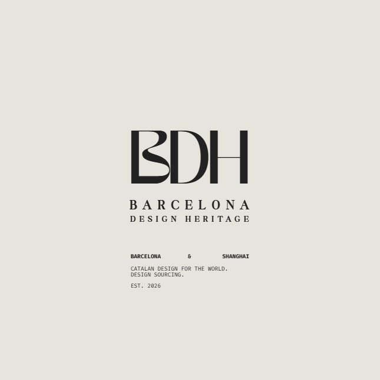
CATALAN SOURCING FOR THE WORLD.
EST. 2026
BDH / 01
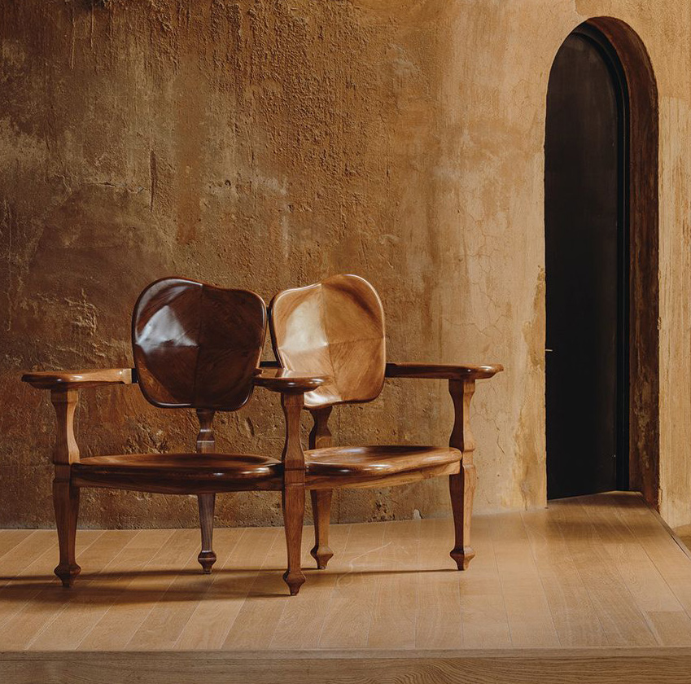
MANIFESTO
建筑的地中海灵魂
Design in Barcelona is not an aesthetic trend; it is an enduring architectural legacy. Born from the unique interplay between Mediterranean light, raw materiality, and decades of creative freedom, Catalan design celebrates functional honesty and timeless elegance.
We bridge this rich tradition with the world's most ambitious architectural projects, offering direct access to authentic, original design icons.
巴塞罗那的设计并非一种美学潮流，而是一份经久不衰的建筑遗产。它诞生于地中海独特的光线、天然的材质以及数十年来自由的创作精神，加泰罗尼亚设计崇尚实用性和永恒的优雅。
BARCELONA ATELIER
巴塞罗那工坊
Barcelona functions as a living, breathing atelier for fine international design. Beyond its world-renowned architectural heritage, the city thrives on a deeply rooted network of specialized artisan workshops, master cabinetmakers, hand-blown glass technicians and high-precision metalworkers.
Here, design is never treated as a commodity for mass production; each creation is patiently crafted, meticulously refined, and brought to perfection through generations of inherited technical mastery.
This unique ecosystem bridges artistic freedom and industrial rigor. Time-honored Mediterranean techniques coexist with cutting-edge manufacturing processes, allowing designers to experiment with complex forms and noble raw materials.
Every piece in our curated portfolio emerges directly from this vibrant atelier culture, manufactured under demanding European quality and environmental standards.
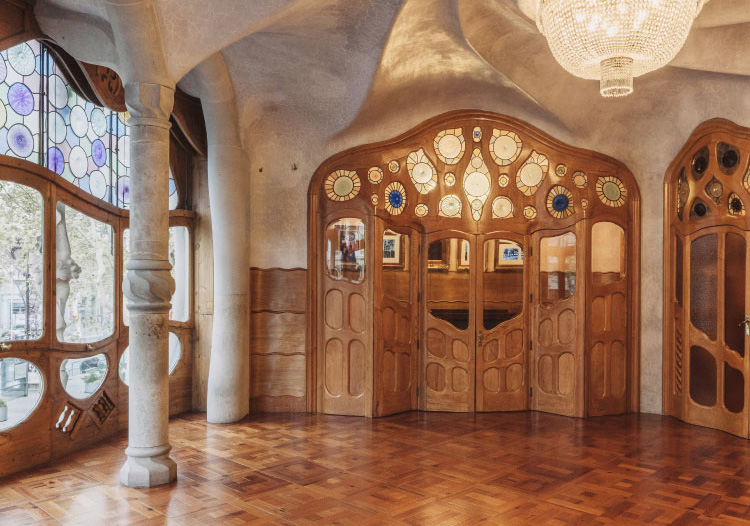
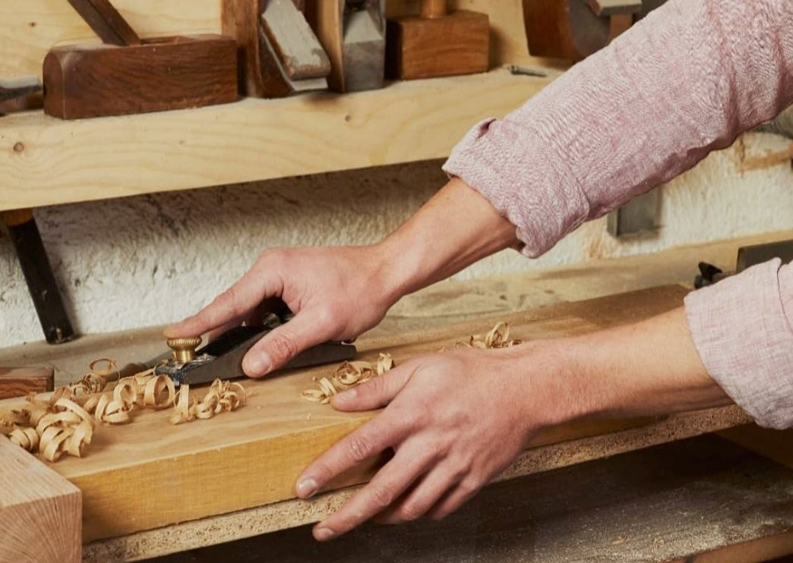
HERITAGE TIMELINE
时代传承
The Catalan modernisme movement defines the concept of a total work of art, merging architecture with master ironwork, bespoke cabinetry and organic geometry.
The birth of contemporary industrial design in Barcelona. A pioneering generation embraces refined rationalism, warm materiality and noble Mediterranean craftsmanship.
A new wave of international design visionaries continues to expand the boundaries of Catalan design, honoring traditional manufacturing while introducing fresh, sculptural expression.
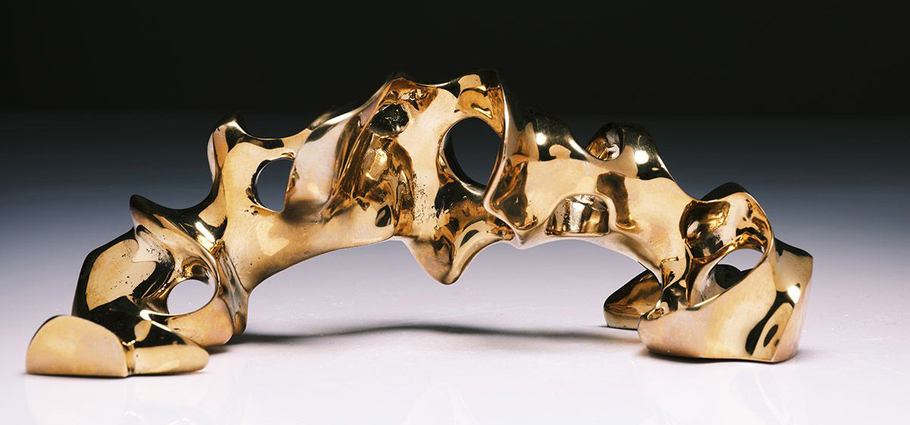
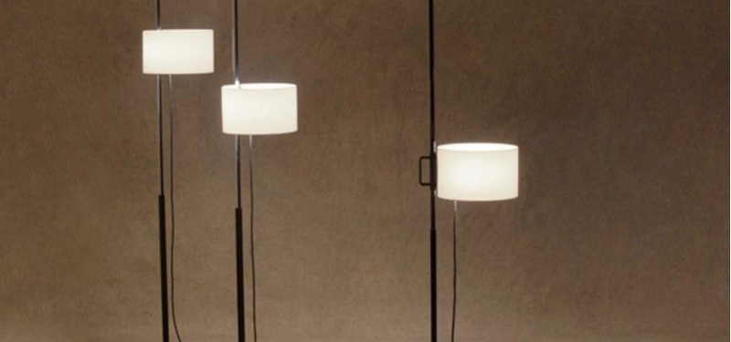
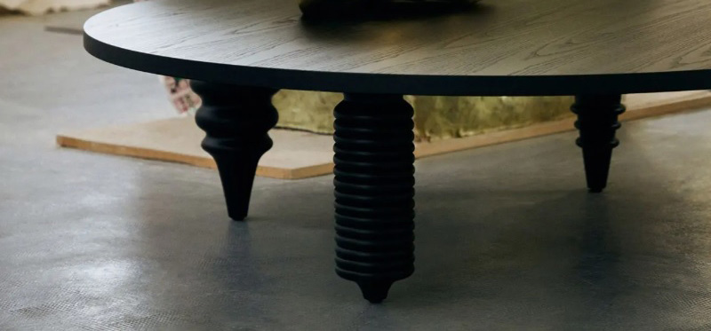
AUTHENTICITY & EFFORTLESS PROCUREMENT
正品保障与无忧采购
CERTIFIEDIn an era of mass replication and complex global supply chains, we safeguard both the artistic integrity of your project and the execution process. We act as your single, trusted European partner from specification to final delivery.
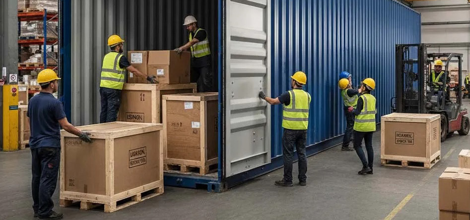
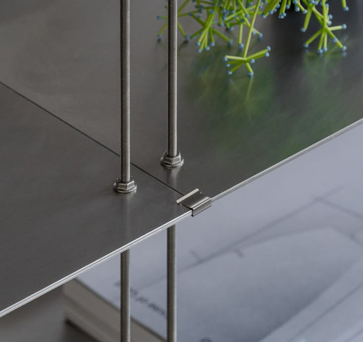
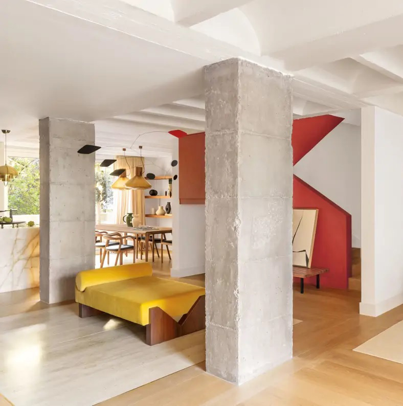
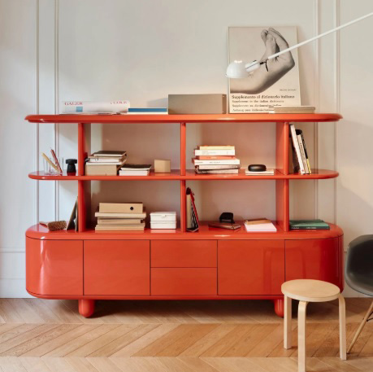
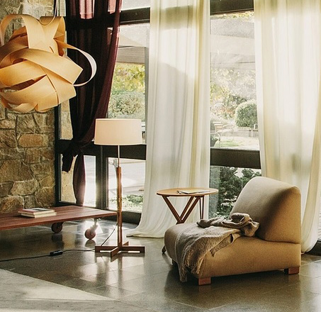
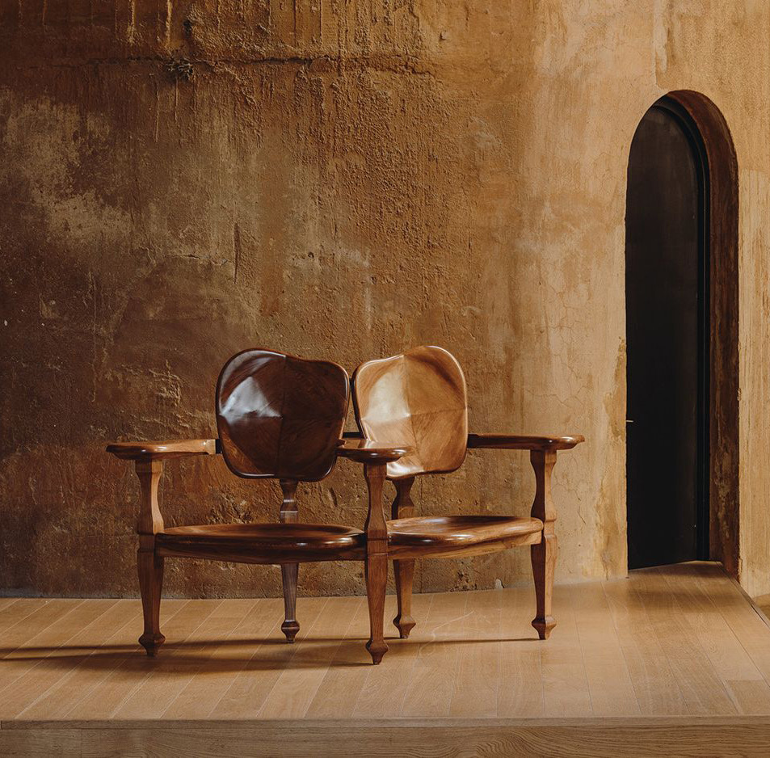
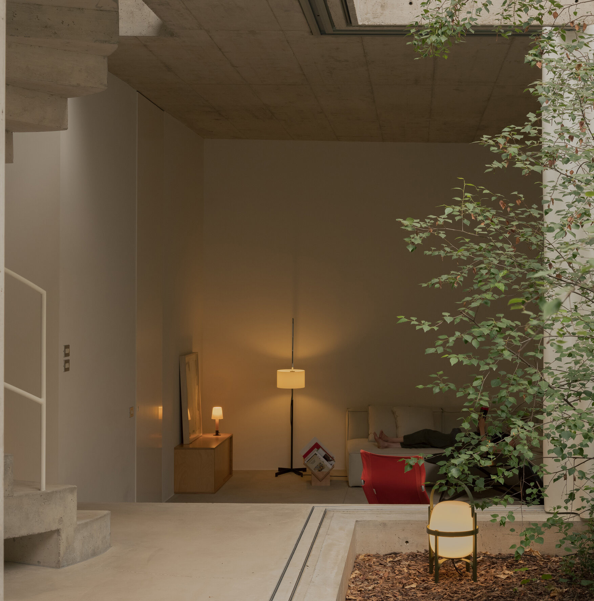
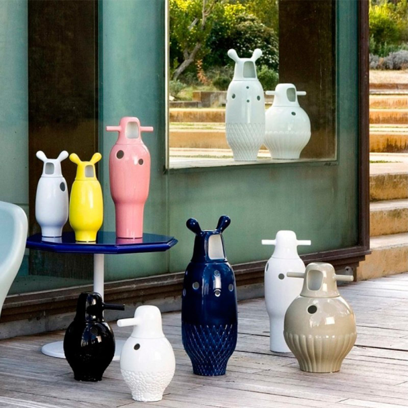
BARCELONA / SHANGHAI
BARCELONADESIGNHERITAGE.COM